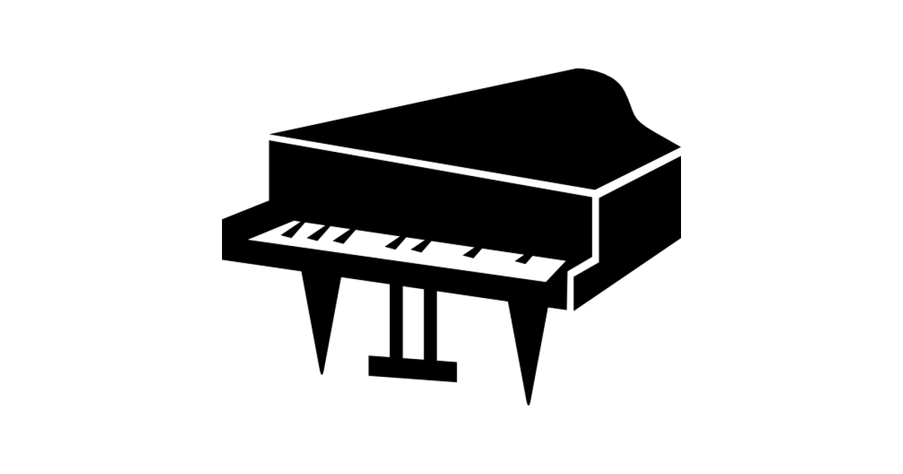
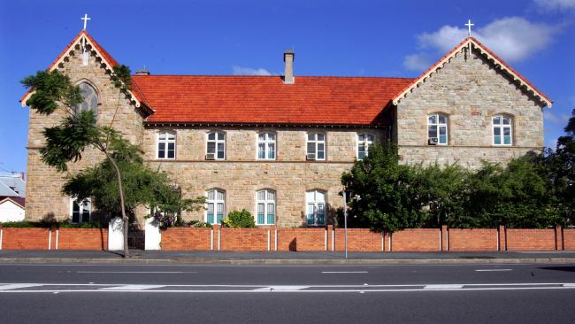
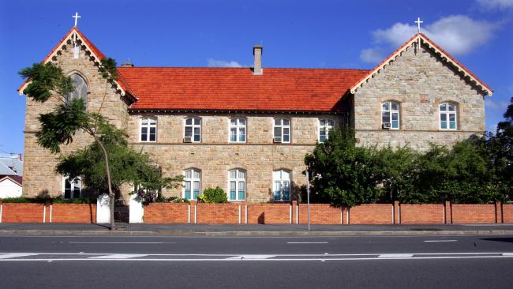
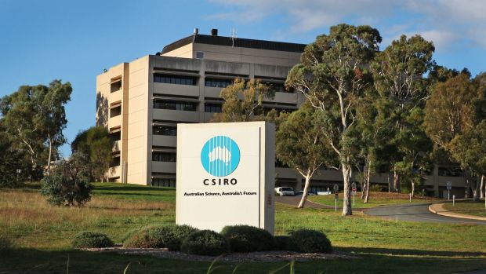
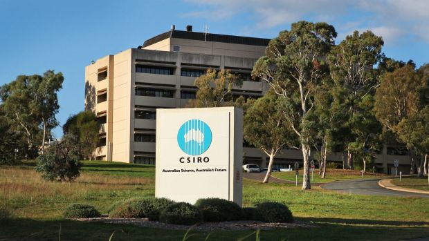

Tennis
I've played tennis since the age of 4 and competed often in school events until graduation. At my prime, I played for the top team of St Joseph's College, Gregory Terrace as a fill in.
Volleyball
I started volleyball in year 8 and it quickly became my favourite sport. I competed often for my high school and have since joined UQ BVC and now am in Aces United.

Violin
I played violin in school from year 5 until graduation. I played in my high school's leading orchestra and have travelled to New Zealand for a performance once. I have completed AMEB level 7.
Piano
I started piano at the age of 4. I took private lessons through high school but my interest in it slowly declined. However after graduated, I was inspired by Animenz to pick it up again and now I love practicing every now and then when I can find the time.

Painting
I used to take painting lessons as a kid and they were the highlights of my week. I love painting scenary and people. Although I have a slight colour blindness, I was good at spacial awareness and maintanining proportionality.

Coding
Yes I am a nerd. I love coding in my free time and often get sucked into a different world while I'm focus on code. Exibit A - this portfolio.

TV Shows
There's a bunch of TV shows that I've watched but my favourite by far is Westworld - I'd highly recommend if you haven't watched it. I also watch a bit of anime.
Technology
I am a huge technology fan. Anything that is new or innovative, I want to hear about it. I am a massive fan of Elon Musk and can talk hours on end about him.


 


 
